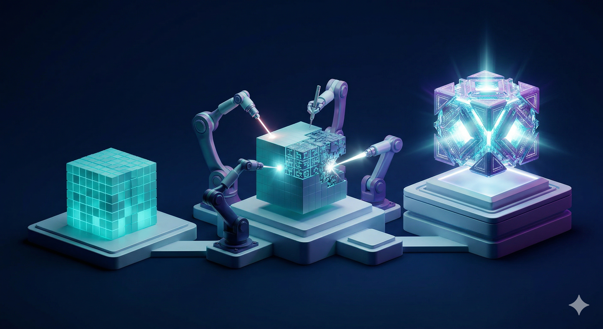
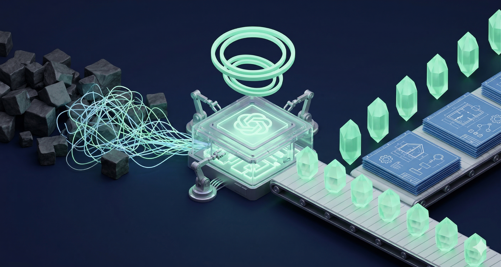

neovida.ai / AI Boost для Printmaster
Промпт-инженерия
для рабочих задач Printmaster
Модуль 2 · 3 часа · промпты + первый Gem
Сегодня вы научитесь
1
Писать промпты по формуле РКЗФО
2
Использовать 6 мощных техник
3
Понимать «память» ИИ и работать с ней
4
Создавать промпты голосом
5
Переносить сильный промпт в повторяемый шаблон
6
Собрать первого Gem-ассистента для своей роли
Что такое промпт?
📝 Простыми словами
Промпт — это инструкция для ИИ. Текст, который вы пишете или говорите нейросети. Как задание для сотрудника — только сотрудник искусственный.
🔑 Почему это важно
ИИ не читает мысли. Он делает ровно то, что вы написали. Плохая инструкция → плохой результат. Хорошая инструкция → отличный результат. Всё решает промпт.
💬
Текст
напечатали
напечатали
🎤
Голос
наговорили
наговорили
📷
Фото
показали
показали
📄
Файл
загрузили
загрузили
Промпт = ваш единственный способ общения с ИИ. Научитесь формулировать — и ИИ станет в 10 раз полезнее.
Без ТЗ = результат ХЗ
Плохой промпт
Напиши клиенту про ремонт принтера
Хороший промпт
Ты специалист Printmaster по сопровождению ремонтов. Клиент сомневается, согласовывать ли ремонт принтера. Контекст: инженер выявил износ узла подачи бумаги и роликов, без замены проблема повторится. Задача: написать спокойное сообщение клиенту. Формат: 5-7 предложений, без давления, деловой тон.
Как вы ставите задачу сотруднику, так и ставите задачу ИИ
Формула
Р К З Ф О
5 элементов идеального промпта
Формула РКЗФО
Р
Роль
Кем должен быть ИИ
К
Контекст
Фон, ситуация
З
Задача
Что сделать
Ф
Формат
В каком виде ответ
О
Ограничения
Чего НЕ делать
Минимум: Роль + Задача + Формат
Почему Роль решает всё
Без роли
ИИ даёт «ответ из Википедии»
Общий, поверхностный, без нюансов
С ролью
ИИ даёт «консультацию эксперта»
Терминология, нюансы, структура профи
«Ты [профессия] с [X]-летним опытом в [область]»
Ваши роли и запросы
Шаг 1: отправьте запрос БЕЗ роли · Шаг 2: добавьте роль в начало · Шаг 3: сравните ответы
| Кто вы | Пример запроса (Шаг 1) | + Роль (Шаг 2) |
|---|---|---|
| Финансы ДДС, ОПиУ | «Помоги подготовить прогноз поступлений и расходов на месяц» | Ты финансовый аналитик сервисной B2B-компании по офисной технике |
| ТМЦ тендеры | «Разбери тендерную позицию и скажи, какие вопросы задать поставщику» | Ты помощник РОПа ТМЦ Printmaster по тендерам, поставщикам и марже |
| Колл-центр звонки | «Оцени разговор оператора с клиентом и улучши скрипт» | Ты руководитель клиентских коммуникаций Printmaster, отвечаешь за заявки и качество звонков |
| Юрист ФАС, договоры | «Найди риски в условиях договора или закупки» | Ты юридический помощник Printmaster по тендерам, договорам и ФАС |
| SMM контент | «Переделай один пост под Telegram, Max, Instagram и короткое видео» | Ты SMM-редактор Printmaster для корпоративных клиентов и сервисного контента |
| ЭДО документы | «Напиши клиенту по статусу документов и дай чек-лист проверки» | Ты помощник по документообороту Printmaster: 1С, Контур, ЭДО, счета, акты |
💡 Лайфхак: сначала отправьте только запрос → получите общий ответ. Потом скопируйте тот же запрос, в начале добавьте роль → сравните глубину
Блок 2
6 техник
Которые делают промпты мощнее

Техника 1
Обратный промптинг (покажи пример)
Нашли что-то, что вам нравится? Попросите ИИ извлечь из этого промпт. Картинку, текст, стиль письма — ИИ разберёт на составляющие и соберёт промпт, который воспроизведёт это.
5 способов обратного промптинга
📸 Памятка → шаблон
Нашли удачную инфографику или инструкцию? «Разбери структуру, стиль и логику. Сделай шаблон для памятки отдела Printmaster»
📝 Пост → контент Printmaster
Скопируйте 2-3 удачных поста: «Извлеки тон, структуру и приёмы. Теперь напиши пост о сервисе офисной техники в таком стиле»
📧 Письмо клиенту → шаблон
Есть письмо, которое хорошо сработало? «Разбери тон, структуру и аргументацию. Сделай шаблон для ответов клиентам по ремонту/документам»
🌐 Страница услуги → своя
Скрин страницы услуги: «Разбери структуру, блоки, аргументы и CTA. Сделай промпт для страницы услуги Printmaster»
📄 КП / тендер → формула
Вставьте обезличенное КП или описание закупки: «Извлеки структуру, логику, вопросы и риски. Сделай шаблон для похожих задач»
⚡ Практика: Обратный промптинг
5 минут — попробуйте один из вариантов
1️⃣ Найдите в телефоне письмо, пост, памятку, КП или текст, который вам нравится
2️⃣ Отправьте его в ChatGPT или Gemini
3️⃣ Напишите: «Проанализируй это. Извлеки стиль, структуру, приёмы. Сделай промпт, чтобы я мог создавать такое же для своей работы»
4️⃣ Используйте полученный промпт — создайте что-то своё в этом стиле
Это работает с рабочими артефактами: письма, скрипты, КП, чек-листы, посты, инструкции
Техника 2
Рассуждай пошагово
Волшебная фраза: «Рассуждай пошагово». ИИ показывает ход мысли. Как бухгалтер, который показывает расчёт.
Пошаговое мышление для каждого отдела
Просим ИИ не просто ответить, а показать маршрут проверки: какие данные нужны, где риск и что делать дальше.
Финансы
Как подготовить прогноз ДДС, если часть оплат не подтверждена?
данныедопущениярискисценариивопросы
ТМЦ / тендеры
Стоит ли заходить в закупку по расходникам и запчастям?
требованияаналогисрокимаржакрасные флаги
Колл-центр
Почему заявки теряются между звонком и передачей в работу?
сценарийданныеответственныйстатусконтроль
Юрист
Какие риски есть в условиях договора или закупки?
обязательствасрокисанкциидоказательстваручная проверка
SMM
Как один сервисный кейс превратить в контент для площадок?
аудиториясмыслформатзаголовкипризыв
Документы / ЭДО
Что проверить перед отправкой клиенту пакета документов?
комплектстатусыреквизитысогласованияписьмо
Фраза: «Разложи решение на 5-7 шагов: что проверить, какие данные нужны, где риск, что делать дальше».
⚡ Практика: Пошагово
3 минуты — попробуйте прямо сейчас
1️⃣ Возьмите любой рабочий вопрос, где нужен развёрнутый ответ
2️⃣ Добавьте: «Рассуждай пошагово»
3️⃣ Перечислите 3-5 шагов, по которым нужно пройти
4️⃣ Оцените — ответ стал глубже?
Примеры шагов: закупка → конкуренты → расходы → маржа → итог

Техника 3
Усиль ответ
Получили результат? Не останавливайтесь. Три приёма, чтобы сделать любой ответ ИИ в разы лучше.
Три приёма усиления
👥 Три эксперта
«Ответь на этот вопрос от лица трёх специалистов Printmaster: финдиректора, руководителя операционного блока и юриста. Пусть каждый даст свою оценку и они обсудят между собой.»
Когда: принимаете решение, выбираете стратегию, оцениваете идею
😈 Адвокат дьявола
«Теперь раскритикуй свой же ответ. Найди 5 слабых мест, рисков и причин, почему это может не сработать. Будь максимально жёстким.»
Когда: проверяете план, ищете слепые зоны, готовитесь к возражениям
🎯 Адаптируй
«Перепиши этот же текст для трёх аудиторий: для корпоративного клиента, для руководителя отдела и для сотрудника-новичка. Сохрани суть, измени подачу.»
Когда: один контент для разных людей, презентации, письма, посты
Один запрос → три приёма → результат, который не стыдно показать.
⚡ Практика: Усиль ответ
5 минут — возьмите любой предыдущий ответ ИИ
1️⃣ Откройте любой чат, где ИИ уже дал вам ответ
2️⃣ Напишите: «Ответь на это от лица 3 экспертов: [кто, кто, кто]»
3️⃣ Потом: «Теперь раскритикуй — найди 5 слабых мест»
4️⃣ Потом: «Перепиши для [другая аудитория]»
Каждый приём можно использовать отдельно — не обязательно все три сразу
Техника 4
Итерации + Запреты
Первый ответ — это черновик. Дальше правите в диалоге.
Фразы для итераций
Хорошо, но сделай короче
Измени тон на более дружелюбный
Это не то. Я имел в виду...
Дай 3 варианта с разным тоном
НЕ используй канцеляризмы
НЕ используй слово «уникальный»

Техника 5
«Задай мне вопросы»
ИИ спросит про бюджет, аудиторию, сроки — о чём вы сами не подумали.
Как это работает
Я хочу [задача].
Задай мне 10 уточняющих вопросов,
прежде чем начинать.
ИИ задаёт вопросы → вы отвечаете → ИИ сам строит идеальный промпт из ваших ответов.
«Задай мне вопросы» для каждого отдела
Эта техника особенно сильна там, где задача ещё туманная: ИИ сначала собирает недостающие вводные, а потом уже помогает.
Финансы
Хочу прогноз поступлений и расходов на месяц.
оплатырасходыпериодрискиформа
ТМЦ / тендеры
Хочу понять, стоит ли участвовать в закупке.
спецификацияаналогипоставщикисрокимаржа
Колл-центр
Хочу улучшить скрипт звонка и не терять заявки.
цельвозражениястатусыпередачаконтроль
Юрист
Хочу предварительно проверить договор или закупку.
обязательстваштрафысрокидоказательстваограничения
SMM
Хочу контент-план Printmaster на месяц.
аудиториикейсырубрикиплощадкиCTA
Документы / ЭДО
Хочу чек-лист отправки документов клиенту без ошибок.
комплектреквизитыподписисрокиписьмо
Фраза: «Сначала задай мне 10 вопросов про цель, входные данные, ограничения и критерии качества».
⚡ Практика: Задай вопросы
3 минуты — самая мощная техника
1️⃣ Напишите: «Я хочу [ваша реальная задача]»
2️⃣ Добавьте: «Задай мне уточняющие вопросы, прежде чем начинать»
3️⃣ Ответьте на вопросы ИИ
4️⃣ Оцените результат — стал ли ответ точнее?
ИИ сам спросит про бюджет, аудиторию, сроки — о чём вы бы не подумали
Перерыв
10 минут
Блок 3
Память ИИ
Почему ИИ «тупеет» в длинных чатах
Контекстное окно
У ИИ есть «стол», на который он раскладывает ваш разговор. Стол конечный.
Бесплатный ChatGPT
~100 страниц
контекстного окна
ChatGPT Plus / Gemini Pro
~500 страниц
контекстного окна
⚠️ Когда «стол» заполняется, ИИ начинает сбрасывать старые «листки» и забывать. Поэтому в длинных чатах он «тупеет».
«Гниение посередине»
Исследование Стэнфорда
Начало
Помнит хорошо
Середина
Теряет
Конец
Помнит хорошо
ИИ лучше всего помнит начало и конец. Середину теряет.
Правило 1: Ключевое в начало и конец
Для длинных промптов (10+ строк)
Неправильно
Ты помощник по тендерам.
Компания обслуживает офисную технику...
Есть спецификация...
НЕ ВЫДУМЫВАЙ ЦЕНЫ И ПОСТАВЩИКОВ
Нужно оценить позицию...
Сделай вывод.
Правильно
НЕ ВЫДУМЫВАЙ ЦЕНЫ И ПОСТАВЩИКОВ
Ты помощник РОПа ТМЦ Printmaster.
Компания обслуживает офисную технику...
Есть обезличенная спецификация...
Сделай таблицу рисков и вопросов.
Если данных не хватает, сначала спроси.
Правило 2: Структурируйте — нумеруйте
Стена текста
Мне нужно письмо клиенту по ремонту принтера оно должно быть не длинное без давления объяснить зачем ремонт нужен и попросить согласовать...
Нумерованный список
1. Ситуация: клиент сомневается в ремонте принтера
2. Причина: износ узла подачи бумаги и роликов
3. Тон: спокойно, без давления
4. Формат: 5-7 предложений
5. В конце: следующий шаг для согласования
Правило 3: Новый чат = чистая память
Когда новый чат
✓ Сменили тему
✓ Чат длиннее 15-20 сообщений
✓ ИИ начал «тупить»
✓ Хотите новую задачу
Когда НЕ надо
✗ Правите один и тот же текст
✗ В середине пошаговой задачи
✗ ИИ задал вам вопросы
Одна задача = один чат
Правило 4: Резюмируйте в длинных диалогах
Давай подведём итог:
1. Мы разбираем обезличенную тендерную позицию
2. Уже нашли 3 риска: срок поставки, аналог, маржа
3. Нельзя выдумывать цены и поставщиков
4. Нужна таблица вопросов поставщикам
Теперь собери короткий чек-лист решения: участвовать / уточнить / отказаться.
Напоминаете ИИ всё важное. Как после обеда: «Так, мы остановились на том, что...»
Блок 4
Практика
Пишем промпт для своей работы по формуле РКЗФО
Полный пример: РКЗФО
Один рабочий запрос для ТМЦ и тендеров, разложенный по формуле.
Рроль
Ты помощник РОПа ТМЦ Printmaster по тендерам, поставщикам и марже.
Кконтекст
Компания обслуживает офисную технику, ремонтирует принтеры и участвует в B2B-закупках. Есть обезличенная позиция из тендера, цены пока нет.
Ззадача
Помоги предварительно оценить позицию и подготовить вопросы поставщику.
Фформат
Сделай таблицу: требование, что уточнить, риск для маржи, следующий шаг.
Оограничения
Не выдумывай цены, поставщиков и характеристики. Если данных мало, сначала задай уточняющие вопросы.
⚡ Практика: пишем свой промпт
7 минут — главное упражнение урока
1️⃣ Возьмите реальную рабочую задачу — то, что вам нужно сделать на этой неделе
2️⃣ Напишите промпт по формуле: Роль + Контекст + Задача
3️⃣ Добавьте Формат (таблица, список, текст) и Ограничения
4️⃣ Отправьте в ChatGPT или Gemini → оцените результат
5️⃣ Не нравится? Итерируйте! «Сделай короче», «Измени тон», «Добавь...»
Если затрудняетесь — поднимите руку, поможем

Техника 6
Мета-промпт
Приём, при котором вы даёте ИИ сырую идею или задачу в свободной форме, а затем просите его самостоятельно превратить это в структурированный, грамотный промпт, готовый к использованию.
Мета-промпт: как это работает
Вы не пишете промпт сами. Вы просите ИИ написать его за вас.
🍳 Аналогия
Вы не готовите блюдо сами — вы объясняете повару, какой рецепт написать. Повар пишет рецепт, вы проверяете, и говорите: «Теперь готовь по нему.»
🔄 Как это выглядит
Описываете задачу своими словами — хоть голосом, хоть набросками. Потом говорите: «Собери из этого правильный промпт с ролью, контекстом, задачей и форматом.» ИИ сам выстраивает структуру и выдаёт готовый промпт.
1
Вы наговорили задачу как получится — хоть 3 предложения, хоть абзац
2
Попросили: «Сделай из этого промпт по РКЗФО»
3
ИИ выдал готовый промпт — проверили, отправили
Мета-промпт — это промпт для создания промпта. Вы думаете о задаче, а ИИ думает о формулировке.

⭐ Супертехника
Наговори голосом
Формула РКЗФО — это база. Вы должны понимать, что входит в хороший промпт. Но запоминать и писать вручную не обязательно — просто расскажите ИИ голосом что нужно, а он сам упакует это в идеальный промпт.
Как это работает
Два шага — и готово
🎤 Шаг 1: наговорите голосом
Просто расскажите что вам нужно. Как другу. 3-4 предложения. Не думайте про формулу — просто говорите.
🤖 Шаг 2: скажите ИИ
«Упакуй мою мысль в промпт по формуле РКЗФО. Примени все правила промпт-инженерии. Выполни получившийся промпт.»
💡 Почему это супертехника: вам не нужно помнить формулу, не нужно думать про роль и формат — ИИ сам всё определит из вашего рассказа. Вы просто говорите — он делает.
Что ИИ сделал сам
Из вашего рассказа голосом он автоматически:
Р
Определил роль — понял, какой специалист нужен
К
Вытащил контекст — ваш бизнес, город, ситуацию
З
Сформулировал задачу — чётко, конкретно
Ф
Выбрал формат — таблица, список или текст
О
Добавил ограничения — и сразу выполнил!
Вся формула РКЗФО — автоматически. Вы просто поговорили.


Фразы-усилители
Добавляйте эти инструкции в любой промпт, чтобы получить результат лучше. Не обязательно все сразу — выбирайте те, которые подходят к задаче.
15 фраз, которые усиливают промпт
1. «Если не знаешь ответа — скажи прямо, не выдумывай»
2. «Если не уверен — перепроверь, не давай ответ наугад»
3. «Отвечай развёрнуто, не сокращай ради краткости»
4. «Если мало контекста — сначала задай вопросы, потом делай»
5. «Не додумывай за меня — если чего-то не хватает, спроси»
6. «Если я указал на ошибку — не спорь, исправь»
7. «Не уходи в сторону, делай ровно то, что просят»
8. «Учитывай всё, что я уже сказал выше в диалоге»
9. «Если моя идея слабая — скажи честно, будь критичным»
10. «Если видишь, как сделать лучше — предложи свой вариант»
11. «Качество важнее скорости, если я не сказал иначе»
12. «Не повторяй одну мысль разными словами ради объёма»
13. «Разделяй факты и мнения — обозначай, где рекомендация»
14. «Один ответ — одна задача. Не мешай в кучу»
15. «Начинай с главного вывода, потом объясняй»
🎨 Температура: Хочешь креатив — «будь смелее, предложи нестандартное». Хочешь точность — «строго по фактам, без фантазий».
Блок 5 · если успеваем, делаем руками
Ассистентный
подход
подход
Сначала сохраняем инструкцию. Потом зашиваем её в Gem.
КП — это не один огромный промпт
Пример Printmaster: клиенту нужно отправить коммерческое предложение по ремонту или обслуживанию оргтехники. Если кинуть всё в один запрос, ИИ смешает вопросы, расчёт, текст и проверку.
вход
Заявка клиента
Что пришло: модель техники, проблема, объём обслуживания, сроки, город, ограничения, история клиента.
процесс
3 коротких промпта
Разобрать заявку → собрать КП → проверить и написать письмо. Каждый шаг делает одну понятную работу.
выход
Готово к отправке
Проверенный черновик КП, короткое письмо клиенту и список мест, которые человек должен подтвердить.
Ассистентный подход начинается там, где мы перестаём просить «сделай всё» и ведём ИИ по шагам.
Цепочка: выход → вход
Один промпт готовит материал для следующего. Так мы закрываем одну рабочую задачу тремя аккуратными действиями.
Промпт 1
Разбери заявку
Факты, пробелы, вопросы клиенту
выход: сводка
Факты, пробелы, вопросы клиенту
выход: сводка
→
Промпт 2
Собери КП
Решение, состав работ, условия
выход: черновик КП
Решение, состав работ, условия
выход: черновик КП
→
Промпт 3
Проверь и упакуй
Риски, правки, письмо клиенту
выход: готовый пакет
Риски, правки, письмо клиенту
выход: готовый пакет
Не пересказываем задачу заново. Ответ шага 1 вставляем в шаг 2, ответ шага 2 — в шаг 3.
Инструкции храним в файлах
Самый простой вариант до Gem: папка на Google Drive с тремя готовыми промптами. Открыли файл → вставили данные → получили стабильный результат.
📄 01-разбор-заявки-на-КП.md
Факты, пробелы, уточняющие вопросы и краткая сводка по заявке клиента.
📄 02-черновик-КП-Printmaster.md
Структура коммерческого предложения: задача, решение, состав работ, условия, следующий шаг.
📄 03-проверка-и-письмо-клиенту.md
Контроль фактов, рисков и финальное письмо клиенту без давления и лишней воды.
Как пользоваться
1
Взяли промпт 1
2
Получили сводку
3
Передали её в промпт 2
4
Дошли до готового КП
Три промпта для КП
На уроке можно пройти один кейс целиком: от сырой заявки до письма клиенту.
1 · разбор
Заявка → сводка
Ты менеджер Printmaster по B2B-сервису. Разбери заявку клиента: факты, пробелы, 5 уточняющих вопросов и краткая сводка для КП.
2 · КП
Сводка → черновик
На основе сводки собери КП: задача клиента, решение Printmaster, состав работ или поставки, сроки, условия и следующий шаг. Цены не выдумывай.
3 · отправка
Черновик → письмо
Проверь КП как руководитель продаж: риски, непонятные места, что должен подтвердить человек. Затем подготовь короткое письмо клиенту.
Шаг 0: переезд в Gemini
Если до этого работали в ChatGPT, сначала вытаскиваем из него рабочий контекст о себе, а потом переносим этот контекст в Gemini.
В ChatGPT
Собери рабочую сводку обо мне для переноса в Gemini.
Вытащи из нашей переписки: мою роль, отдел, частые задачи, процессы, стиль ответов, ограничения, что нельзя выдумывать и какие форматы мне удобны.
Если данных не хватает — задай вопросы. В конце дай готовый блок «Контекст для Gemini».
В Gemini
1
Откройте gemini.google.com и войдите в Google-аккаунт.
2
Вставьте блок «Контекст для Gemini» в новый чат.
3
Напишите: «Учитывай этот контекст во всех задачах по Printmaster. Если данных мало — сначала задавай вопросы».
4
После этого создаём Gem под один повторяющийся процесс.
Сначала учим Gemini, кто вы и как работаете. Потом уже зашиваем процесс в Gem.
Где можно зашить инструкцию?
GPTs в ChatGPT
Кастомные версии ChatGPT под задачу. Можно загружать файлы и задавать инструкции.
Минус: обычно нужен Plus.
Минус: обычно нужен Plus.
✨ Gemini — Gems
Персональные ассистенты в Google Gemini. Быстро создать, удобно тестировать, можно начать прямо на уроке.
Сегодня делаем здесь.
Сегодня делаем здесь.
⚠️ Gem — это внутренний помощник для сотрудника. Клиент не общается с ним напрямую. Человек проверяет и отправляет финальный ответ.
Gem — ваш мини-Gemini под одну задачу
Обычный Gemini
Не знает, что такое Printmaster.
Не знает роли сотрудника.
Не помнит шаблон ответа и запреты.
Ваш Gem
Знает, какую работу выполняет.
Отвечает в нужном формате.
Сам задаёт вопросы, если данных не хватает.
Gem нужен не “на всё”. Лучший первый Gem — под один частый процесс.
Первые Gem-боты для Printmaster
| Роль / отдел | Первый Gem | Что делает |
|---|---|---|
| Продажи / сервис | Помощник по КП | Ведёт цепочку: разобрать заявку → собрать КП → проверить и подготовить письмо. |
| Финансы | Финансовый черновик | Собирает структуру ДДС, вопросы к отделам, риски и сценарии. |
| ТМЦ / тендеры | Тендерный аналитик | Разбирает спецификацию, аналоги, вопросы поставщикам, маржу и красные флаги. |
| Колл-центр | Контроль качества звонков | Анализирует обезличенный фрагмент разговора, улучшает скрипт и обратную связь. |
| Юрист | Предварительная карта рисков | Находит спорные условия, готовит вопросы и черновик запроса разъяснений. |
| SMM | Контент-редактор Printmaster | Перепаковывает один материал под Telegram, Max, Instagram и короткое видео. |
| Документы / ЭДО | Помощник по статусам | Письма клиентам, чек-листы документов, напоминания и следующий шаг. |
ДЕМО
Создаём Gem — пошагово
1
Откройте gemini.google.com и в левом меню выберите Gem Manager.
2
Нажмите Create Gem и дайте понятное название: «Тендерный аналитик Printmaster» или свой вариант.
3
Вставьте инструкцию: можно взять файл из Drive или собрать её мета-промптом на следующем слайде.
4
Добавьте 1-2 безопасных файла: FAQ, шаблон КП, чек-лист, обезличенный пример.
5
Если доступны настройки: выберите модель, Deep Research или подключение к базе знаний только под задачу процесса.
6
Справа в предпросмотре протестируйте Gem на обезличенной рабочей задаче.
7
Сохраните, а потом улучшайте инструкцию после 3-5 реальных тестов.
Промпт для инструкции Gem
На слайде — короткая версия. Полный промпт лежит в шпаргалке участника.
Я хочу создать Gem для процесса: подготовка коммерческого предложения клиенту Printmaster.
Входные данные: заявка клиента, модель техники, проблема, объём работ, ответы на вопросы.
Составь инструкцию для Gem, чтобы он вёл меня по цепочке:
1. Разобрать заявку: факты, пробелы, уточняющие вопросы.
2. Собрать черновик КП: решение, состав работ, условия, следующий шаг.
3. Проверить результат: риски, что подтвердить человеку, письмо клиенту.
Правила:
— не делай всё одним ответом;
— показывай, что передать в следующий шаг;
— не выдумывай цены, сроки, поставщиков и персональные данные;
— в конце дай текст для поля Instructions.
Файлы в Gem: полезно, но аккуратно
Можно для учебного Gem
Обезличенный FAQ по услугам.
Шаблон КП без клиентов и цен.
Регламент или чек-лист без закрытых данных.
Примеры текстов, где нет ФИО, телефонов, реквизитов.
Нельзя загружать
Договоры, счета, акты, реквизиты.
Выгрузки 1С, CRM, Контур, ЭДО.
ФИО, телефоны, почты клиентов и сотрудников.
Закрытые финпоказатели и маржу без разрешения.
⚡ Практика: первый Gem-бот
15-25 минут, если остаётся время после промпт-инженерии
1️⃣ Выберите один процесс: тендер, звонок, письмо, ЭДО, контент, ремонт.
2️⃣ Наговорите или напишите Gemini, как этот процесс устроен.
3️⃣ Попросите: «Сделай инструкцию для Gem по этому процессу».
4️⃣ Создайте Gem, вставьте инструкцию, сохраните.
5️⃣ Протестируйте на обезличенном примере и улучшите инструкцию.
Цель не “идеальный бот”, а первый рабочий помощник, которого можно докрутить дома.
5 главных ошибок новичков
| Ошибка | Плохо | Хорошо |
|---|---|---|
| Размытый запрос | «Проанализируй тендер» | «Таблица: требования, аналоги, вопросы, риски маржи» |
| Всё в одном | «Сделай договор, КП, пост и стратегию» | Один процесс = один чат или один Gem |
| Нет контекста | «Напиши клиенту» | Кто клиент, что случилось, тон, следующий шаг |
| Первый = финальный | Скопировал, отправил | Оценил, улучшил, проверил человеком |
| Данные без фильтра | Загрузил договор, 1С, телефоны | Обезличил, взял шаблон, убрал закрытое |
Домашнее задание
1
Напишите 3 промпта по РКЗФО для своей роли в Printmaster.
2
Выберите один повторяющийся процесс: звонок, тендер, письмо, ЭДО, контент или ремонт.
3
Создайте или доработайте один Gem под этот процесс.
4
Протестируйте на 3 обезличенных задачах и улучшите инструкцию.
💡 Что прислать: название Gem, скрин настроек или ответов, один сильный результат и список безопасных файлов, которые стоит добавить.
neovida.ai / AI Boost для Printmaster
Спасибо!
Сильный промпт — это начало.
Рабочий Gem — это уже помощник для отдела.
Рабочий Gem — это уже помощник для отдела.